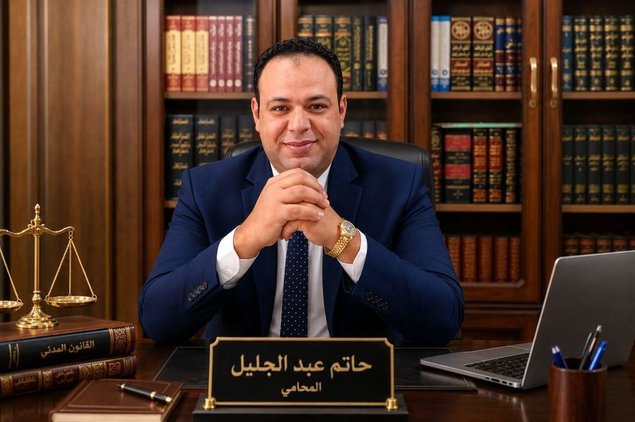

01
الفهم
فهم الوقائع والاستماع إلى تفاصيل المسألة القانونية بكل دقة وعناية.
محامٍ بالنقض والدستورية العليا
خبرة قانونية تمتد عبر عشرين عامًا من العمل والمرافعة والممارسة المهنية.

محامٍ بالنقض والدستورية العليا، بخبرة مهنية تمتد إلى عشرين عامًا في مجال العمل القانوني والمرافعات.
بدأت المسيرة بالقيد في نقابة المحامين عام 2008، وتدرجت خلال السنوات في درجات القيد والترافع حتى الوصول إلى القيد أمام محكمة النقض والمحكمة الدستورية العليا عام 2026.
أحرص على تقديم ممارسة قانونية تقوم على دراسة الوقائع والمستندات بعناية، وفهم الأبعاد القانونية لكل مسألة، واختيار المسار الملائم لها، مع الالتزام بأصول المهنة ومسؤوليتها.
أؤمن بأن المحاماة رسالة تقوم على حماية الحقوق، وتقديم المشورة بوضوح، والعمل وفق القانون بما يحقق أفضل معالجة قانونية ممكنة.
الحمد لله الذي بنعمته تتم الصالحات. محطة جديدة في المسيرة المهنية أمام أعلى منصة قضائية في البلاد، تحمل معها أمانة الالتزام بالحق والدقة في أداء الرسالة.
أربع خطوات مترابطة من الاستماع إلى اختيار المسار الأنسب.
فهم الوقائع والاستماع إلى تفاصيل المسألة القانونية بكل دقة وعناية.
دراسة المستندات والنصوص القانونية والأبعاد المرتبطة بالموضوع.
تقييم الموقف القانوني والخيارات المتاحة بصورة واقعية ومتأنية.
اختيار المسار القانوني الأنسب والتعامل معه بمهنية ودقة.
الترافع والدفاع في القضايا الجنائية، مع دراسة وقائع كل قضية وملابساتها والأسانيد القانونية المرتبطة بها.
التعامل مع المنازعات المدنية والمسائل المتعلقة بالحقوق والالتزامات، ودراسة الوقائع والمستندات وتحديد المسار القانوني المناسب.
تقديم الخدمات والمرافعات القانونية في المسائل الداخلة ضمن نطاق الأحوال والقواعد القانونية المنظمة لها.
صياغة ومراجعة العقود والاتفاقيات بما يحقق وضوح الالتزامات ويحفظ حقوق الأطراف ويحد من المخاطر القانونية.
تقديم الاستشارات القانونية بعد دراسة الوقائع والمستندات، مع توضيح الموقف القانوني والخيارات المتاحة بصورة واضحة.
القيد لأول مرة بنقابة المحامين بدرجة جزئي، وبداية المسيرة المهنية في مجال المحاماة والعمل القانوني.
اكتمال التأسيس القانوني، والقيد بدرجة ابتدائي، والقبول للمرافعة أمام المحاكم الابتدائية.
القيد بدرجة الاستئناف، والقبول للمرافعة أمام محاكم الاستئناف العالي ومجلس الدولة.
القيد أمام محكمة النقض والمحكمة الدستورية العليا، والوصول إلى أعلى درجات القيد المهني.
للاستشارات والاستفسارات القانونية، يمكن التواصل مباشرة عبر الهاتف أو واتساب أو البريد الإلكتروني.
الرياض — كفر الشيخ — جمهورية مصر العربية